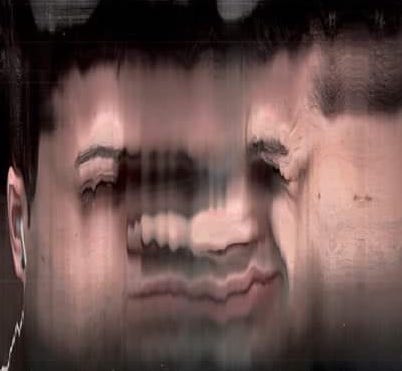

La avenida desaparece con la vía entre que pasa el tren, embutiendo en la mano de enfrente una tripa de autos y autos, colectivos, camiones, camionetas, motos y una carreta. Todo a la más reverenda espera que me incumbe en lo que tarda el bondi. La ristra de tráfico se alarga por la patria enmarcando un pleno celestial a modo de cartón enraizado en los postes y más allá, a lo último, humo blanco se caga la industria por una chimenea. Me rodea una gigantografía, separándome de lo demás. La realidad se ve puesta en algo anterior, de donde sale aquella palmera.
Llevo hecho como un canelón de Buenos Aires, un rollo de hojas sobre cuestiones que se me dieron en la escritura, a lo de Oscar Tira, ¿y por qué a lo de Oscar el catedrático que me daba estética?. Será porque con él me entró el problema de la apariencia. Dos cifras en la unidad paciente de los años para conjurar estos pensam... perdón, el tráfico rueda entre su porquería invisible y frena, se estanca de nuevo.
La sarta de vagones dura horas en un segundo que no pasa, pero pasa, metamorfoseado, venís a sorber cuasi probándome un néctar, con tus dedos, del culo. Giro y veo lo que parece algún tipo de hermana tuya. Pero no, por arte apareciste así.
—¿Oscar?
—Carmen —me respondés con sonrisa de wacho.
Y por si no alcanzaba de paranormal, atrás del llamado entre mis cachas te saco
una mano para saludarte con rigor académico. Yendo mi brazo se enlerda, la avenida se complica al doble de vergüenza hasta que los engranes se paran. Quedaste con
los ojos cerrados. Estas trasvestido de vieja paqueta, pintarrajeado, agarrando un monedero amorfo. Mirá tu lunar. A Oscar no le quedaba así, Carmen. Empieza a moverse en pausa, ese mínimo que modifica tu cuerpo. Tu izquierda, me vas a dar tu izquierda, que es como darle a mi derecha a que se salude en el espejo. Llego al ancho desesperante del recreo mínimo que engorda, hasta que acá, sin el torque de ningún brazo (única posibilidad de converger en tu palma), vírgenes de este paralelo, en asir mutuo dimos afuera de lo común.
—¿Está pasando? —pregunto, ya que encastra izquierda en derecha como normalmente.
—Alquimia retórica —y me hacés ahora sonrisa de wacha.
—¿Vamos a la parrillita de acá en frente?
—¿A quién le hablas?
—A vos.
—¿A mí quién?
—A vos... Carmen —te digo dignándome a caminar a través de la avenida clavada en marcha.
Un camionero te mira de espalda, de donde no se ve el mapa de tu cara. La peluca debe ser carísima porque te cuelga un pelo bárbaro. Nos sentamos afuera en unas sillas de plástico. Adentro hay un tipo parado, le caen como unos testículos por encima de la ceja derritiéndole media cara, la otra media la tiene estrellada con más caos de testiculitos en miniatura. No te saca un ojo de encima, el que le falta se va por un agujero negro testicular. Increíble el tipo aunque es real. Entonces, ¿por qué increíble? Increíble que Oscar o, mejor dicho, Carmen se haya manifestado así, aunque lo hizo, entonces tampoco.
—Lo que creo increíble es la muerte de los espectros —contestas cuando “los por qué de lo increíble” me iban por mente.
No se creía nada, ni la cara enferma del tipo parado, mucho menos la telepatía que me clavaste, que todavía siga el tren pasando, nada, no se pudo creer nada de lo que se fue cumpliendo. Hablaste, y para esto fue necesario que las tierras de tu tez se arruguen en relieves irreconocibles, de como el fantasma de Platón se manifestó en una −ya bastante desagraciada− universidad de arte y los estudiantes lo lincharon. Rayaste en el aire su yacimiento, que todavía anda por ahí a medio descuartizar, su holograma perpetuo salpicado por los pasillos. La muerte de Platón murió quedando como una doble burla a los sentidos. Tal cual algo de otro, copia de copia.
¿Cómo?, ¿cómo podría estar dándose el repliego de la falsedad entre nosotros sin que nos demos cuenta? El degradado que supera las mentiras, haciéndolas más y más falsas.
—Te voy a dar una explicación marciana.
Digo, para mí porque no lo digo. ¿Será una explicación marxiana? Definitivamente, siguiendo la correntada, da lo que dio. Pariste de ese monedero deforme, con la fuerza de tus dedos, una piedra extraterrestre.
—Acá hay un microalienismo de seres en letargo —y me destellás apuntando con ella, el anteúltimo rayo de esa tarde—. Pintateló mentalmente.
No sé qué habrás querido decir, a esto en vez de pintar, mi cerebro va a corroerse en lo de un chapista. Cómo si sos Óscar te viniste de Carmen, ¿para joderme?, ¿para hacerle un estudio al dominio femenino en la masa? como un álter ego una Rrose Sélavy, ¿es tú gesto duchampiano?, ¿tu obra sobre los géneros? ¿te la das hecho arte?. Sacando de Elsa un mingitorio y justo un mingitorio, que es pa mear parado. Lo de las bacterias alienígenas tampoco es ninguna prueba. Y si lo fuera, ¿por qué microalienismo?, ¿vivirán capitalizadas?, ¿serán tales?. ¿Por qué matar a la muerte de un griego?. Tampoco sé si las tripas afantasmadas de él quedaron tiradas en ese pasillo, pero su duda me llevó a donde se piensa, al adentro que siento de afuera, lo que no se sabe con estímulos, porque si todo fuera sentido no haría falta un solo pensamiento. En la noche que fue entrando no tuvo que pensarse en las almas, gracias a que una se cruzó del cementerio. Tenía trescientos veinte y dos años, hablaba hebreo. Vi su carne transparente bailando, porque pusieron música, corrieron las mesas y de a poco nos fuimos acercando. Llegada cierta altura, sentí que era el momento de zafarme de tanto pensamiento. Agarré la piedra que había quedado afuera del monedero, apunté a su frente y le partí la cabeza de un piedrazo. Después sí se pudrió la cosa. La verdad que era de esperarse, casi mato al alma de la fiesta.
El tipo del supercúmulo de testículos faciales se quedó con los marcianos y Carmen Tira mis escrituras.

Federico Marcheschi Sgró
Vivo en La Matanza. Voy hasta UNA.